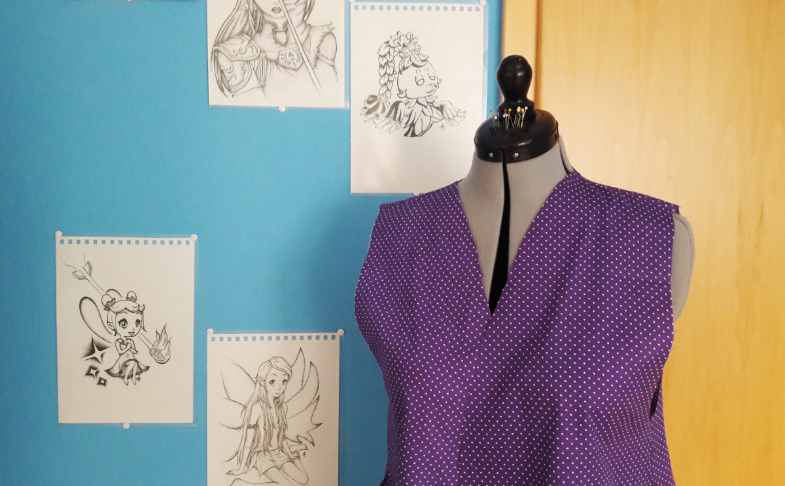

Private Projekte
Nähen
Als ich mein Studium anfing, bin ich auf das Konzept, seine eigene Kleidung zu Nähen, gestoßen. Seitdem habe ich große Freude daran gefunden. Mein Wissen stammt jedoch zum Großteil aus dem Internet. Dieses gelbe Latzkleid habe ich mit Hilfe eines YouTube Tutorials von Annika Victoria genäht.
Während des ersten Corona Lockdowns setzte ich mich mit Schnittmustern aus dem Jahr 1941 ausseinander. Aufgrund des Mangels an Nähanweisungen musste ich eigenständig zu einem Ergebnis kommen. Zuerst habe ich für alle drei Kleidungsstücke aus altem Bettbezug eine Testversion genäht. Zum Einem wollte ich überprüfen, ob mir das Ergebnis passen würde, zum Anderem konnte ich so die Konstruktion testen. Manche Techniken, wie Knopfleisten, Krägen oder Füttern habe ich das erste Mal angewandt. Es ist auch sehr interessant, wo die Unterschiede zu modernen Schnittmustern liegen. Zum Beispiel ist der Rock hinten ein wenig länger, damit der Saum überall auf einer Höhe ist.
Zeichnen
Anders als beim Nähen zeichne ich schon mein ganzes Leben. Ich habe zwar schon seit über fünf Jahren keinen Kunstunterricht mehr gehabt, aber nie das Zeichnen aufgehört. Alle Zeichnungen hier sind traditionell, also mit Stift und Papier. Ich zeichne und schreibe am liebsten mit harten Bleistiften.
Vor ein paar Jahren habe ich mich an der Inktober Zeichen Challenge versucht. Dort ist das Ziel jeden Tag im Oktober eine Zeichnung mit Tinte anzufertigen. Diese Zeichnung ist ein Tag davon. Zuerst habe ich diese Zeichnung auf die Seite gelegt, weil beim Radieren das Papier geknickt ist. Über das nächste halbe Jahr habe ich immer wieder mit einem sehr dünnen Tintenstift daran gezeichnet, bis ich zu diesem Ergebnis kam. Ich bin sehr stolz auf diese Zeichnung, obwohl sie fast schon 2 Jahre alt ist.
Das was mir am Zeichnen am meisten gefällt ist colorieren. Es ist aber auch sehr zeitaufwendig und funktioniert bei Tageslicht am besten, weswegen ich nur selten dazu komme. Es ist jedes Mal wieder faszinierend, welche Farben man durch das Schichten von verschiedenen Farben und Stiften erreichen kann.
Zusammenfassung
Auch wenn ich meine Hobbies nocht auf einem professionellen Level ausübe, machen sie mir dennoch großen Spaß. Die Freude am Erschaffen von Dingen und am dazulernen ist also nicht nur im Studium zu sehen, sondern zeichnet sich auch an meinen Hobbys ab.